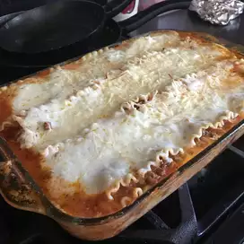

Lasagna

Description
An easy lasagna recipe that saves me lots of time. This recipe is simple and satisfies
everyone in the family. Try it tonight!
This recipe saved the day when I had 5 college kids drop by for dinner unexpectedly.
I used the "no-boil" lasagna noodles, mild Italian sausage instead of hamburg, and
60 ounces of spaghetti sauce, leaving out the water. I also layered in some fresh
baby spinach leaves. It was a big hit!! Thanks!!
Ingredients
- 1 pound lean ground beef
- 1 (32 ounce) jar spaghetti sauce
- 32 ounces cottage cheese
- 3 cups shredded mozzarella cheese
- 2 eggs
- 1/2 cup grated Parmesan cheese
- 2 teaspoons dried parsley
- salt to taste
- griund black pepper to taste
- 9 lasagna noodles
- 1/2 cup water
Steps
- Preheat the oven to 175 degrees Celcius.
- Warm a large skillet over medium heat. Add ground beef and cook 8 to 10 minutes.
Drain the grease. Stir in spaghetti sauce and simmer for 5 minutes.
- Mix together cottage cheese, 2 cups of mozzarella cheese, eggs, 1/2 of the grated Parmesan
cheese, dried parsley, salt and pepper in a large bowl.
- Bake in preheated oven for 45 minutes.